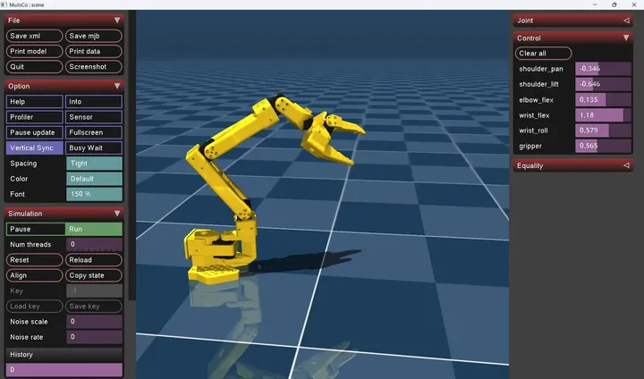

Poundo Robot
A robot arm learning to turn poundo yam, a West African staple, from videos of people making it. Right now: an SO-101 arm in MuJoCo with Jacobian IK, PD control and contact sensing.
- MuJoCo
- LeRobot
- SO-101
- Jacobian IK
- Contact sensing